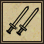
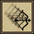
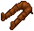

| The Holy Sword | 鍛冶 |
||
| Blessed
自己修復 ： 10 特効 ： アンデッド 武器ダメージ ： ＋40％ 装備条件 ： −100％ ベストウェポンスキル 物理 ： 100％ 基本ダメージ ： 15〜16 装備STR ： 35 片手武器（Swords：longsword） 耐久性 ： 255 重量 ： 7 |
|||
| Primary Armor ignore |
Secondary Concussion blow |
||
| Shamino's Best Crossbow | 弓作成 |
||
| Blessed
自己修復 ： 10 命中 ： ＋15％ 武器ダメージ ： ＋40％ 装備条件 ： −100％ 物理 ： 100％ 基本ダメージ ： 8〜12 射程 ： 7 装備STR ： 35 両手武器（Archery：repeating crossbow） 耐久性 ： 255 重量 ： 6 |
|||
| Primary  Double strike |
Secondary  Moving shot |
||
| Ancient Samurai Helm | 鍛冶直 |
||
| Blessed
自己修復 ： 10 回避 ： ＋15％ 物理抵抗 ： 15％ 炎抵抗 ： 10％ 冷気抵抗 ： 10％ 毒抵抗 ： 15％ エネルギー抵抗 ： 10％ 装備条件 ： −100％ 瞑想可 耐久性 ： 255 重量 ： 5 |
|||
|  | Royal leggings of Embers | 鍛冶 |
|
| Blessed
自己修復 ： 10 物理抵抗 ： 15％ 炎抵抗 ： 25％ 毒抵抗 ： 15％ エネルギー抵抗 ： 15％ 装備条件 ： −100％ 瞑想可 耐久性 ： 255 重量 ： 7 |
|||